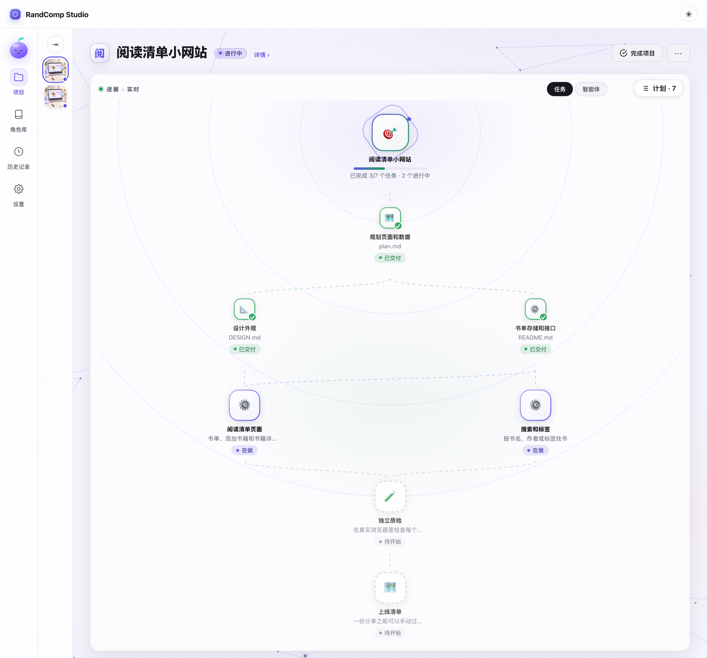
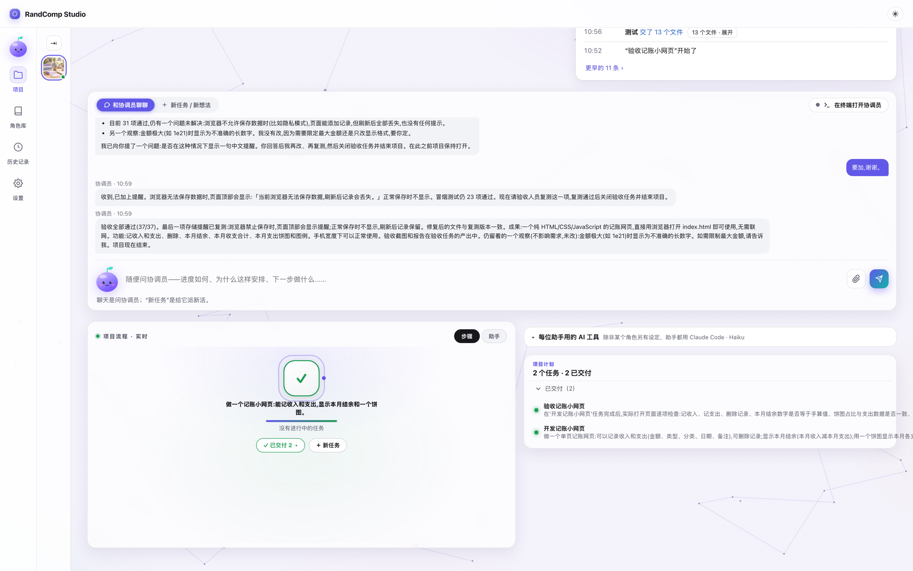
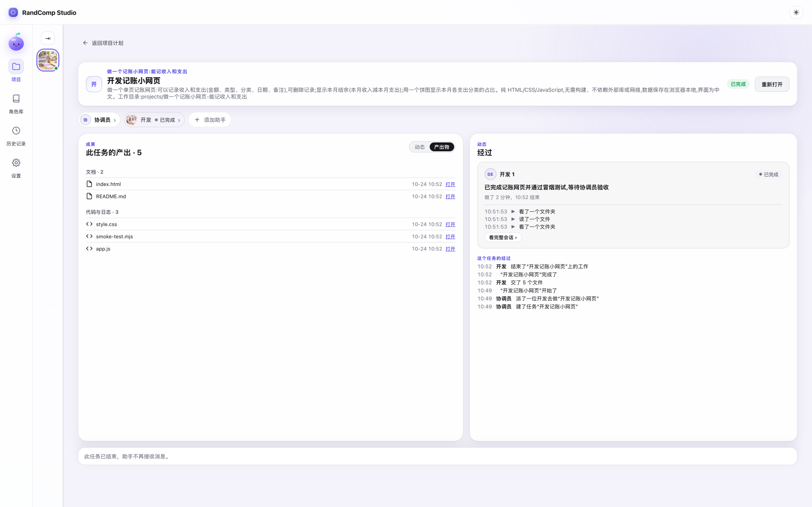
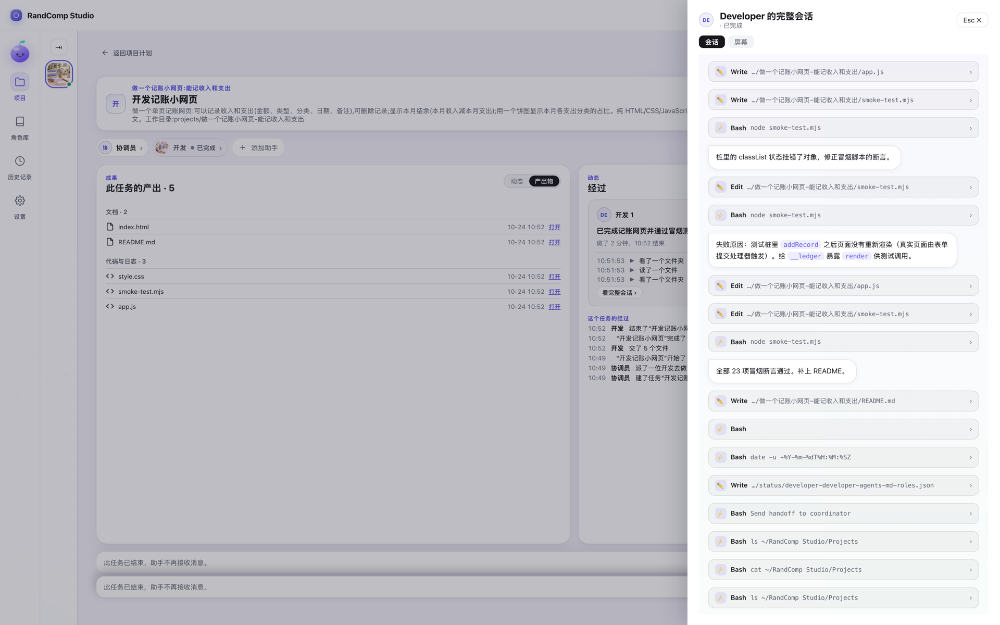
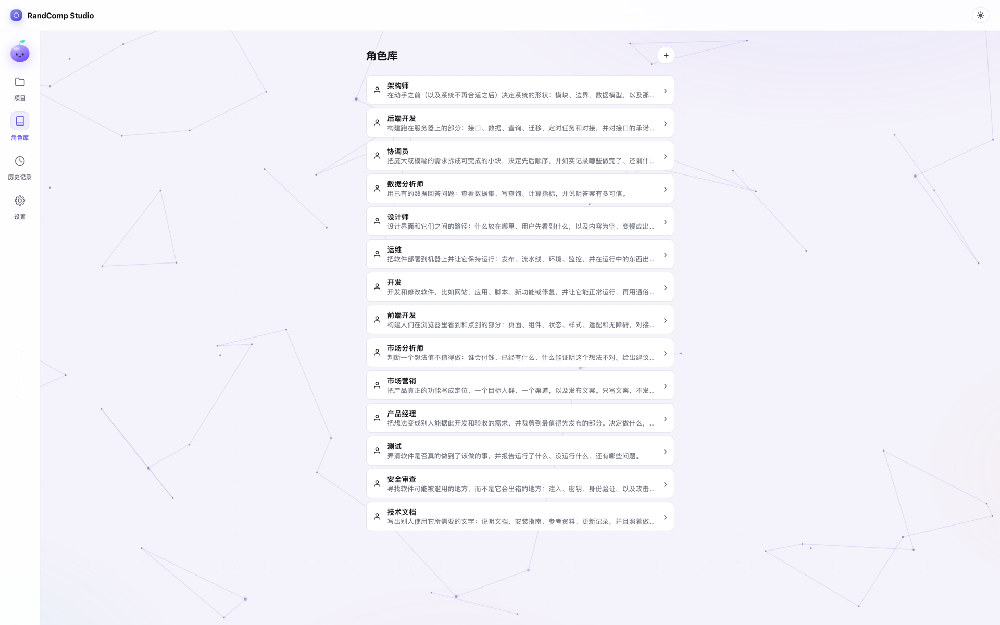

桌面应用
看着计划以任务图的形式一点点长出来，点开任何任务就能看到它交出了什么，需要你处理的事都集中在一处。
计划就在任务图旁边，点一下就能打开。点开任何任务，就能看到它做出了什么。
你好！我住在你的电脑里，团队做出来的东西也都留在这儿。
RandComp Studio 负责规划、制作，并由独立的检查员核对——全部在你自己的电脑上，使用你已有的 AI 工具：Claude Code、Codex、Kimi，或本机模型。
纯本地应用本身、你的项目、每个智能体的终端和它们写下的文件，全都在你自己的电脑上。不用注册账号，没有 RandComp 云端，中间也没有我们的服务器。
你选用的 AI 工具仍会连接各自的服务商；应用会向我们发送匿名使用计数，可以随时关掉。到底有哪些数据会离开你的电脑 →
当前免费 · 运行在你的电脑上 · 无需账号

桌面应用、randcomp 命令和 MCP 驱动的是同一家本地公司：同样的项目、同样的文件，绝不会多出一份副本。哪种顺手就用哪种。
看着计划以任务图的形式一点点长出来，点开任何任务就能看到它交出了什么，需要你处理的事都集中在一处。
计划就在任务图旁边，点一下就能打开。点开任何任务，就能看到它做出了什么。
randcomp 命令行在终端或脚本里驱动同一家公司——也可以从另一台机器 SSH 进来用。每条命令都输出 JSON。
randcomp project create "做一个阅读清单网站" randcomp project list randcomp project ask PROJECT_ID "加一个搜索框"
从应用菜单安装：RandComp Studio → Install the randcomp command in PATH。全部命令 →
问 Claude Code、Claude Desktop、Codex 或其他 MCP 客户端“团队进展如何”，也可以直接把活交给它——不用离开你正在用的对话。
# Claude Code，只需一次：
claude mcp add -s user randcomp-studio -- randcomp mcp
你的助手会得到 project_list、task_create、helper_list、result_list 等工具；会启动付费智能体的工具都会写明。其他客户端在各自的 MCP 设置里添加同一条 randcomp mcp。设置步骤 →
三种方式都只与你电脑上的 RandComp 进程通信，中间没有额外的云端。
暂不定日期——做好了才发布。想先要哪个，告诉我们：反馈 →
RandComp Studio 是一个桌面应用，不是云服务。不用注册账号，你和智能体之间也没有任何 RandComp 服务器：应用、项目、每个智能体的终端和它写下的每个文件，都留在你的电脑上。它调用的是你已经装好的 AI 命令行工具——Claude Code、Codex、Kimi Code 或 Ollama——和你自己在终端里用它们没什么两样。
除此之外，别无其他。RandComp 账号：没有 · RandComp 保存的工作副本：没有 · 发给 RandComp 的提示词和文件：没有。应用自己的服务只监听 127.0.0.1。
拔掉网线试试。用本机模型（Ollama）的角色断网也照常工作；用 Claude Code、Codex 或 Kimi 的角色在恢复联网之前得不到回应，因为它们的服务商在网上。RandComp 本身不需要联网。
需要说明的局限：“本地”指的是 RandComp 自己不加任何云端，并不能让 Claude Code、Codex 或 Kimi 离线工作。另外，较小的本机模型只适合小而明确的工作。
检查员从未看过建造者的思路，甚至可以是完全不同的 AI。随意搭配——规划用强的模型，日常活用便宜的，敏感文件用私有的。
规划用 Claude Code，实现用 Codex，快速检查用 Kimi，草稿交给你本机上的模型。随时可换，项目进行中也行。
检查员依据成果本身工作，而不是听建造者的说法，因此盲区不会被共享。这是多一双眼睛，而不是保证一切正确。
智能体越多，消耗的 Token 越多。小任务保持一个会话；团队留给值得的工作。
# 一切都是你磁盘上的普通文件 reading-list/ plan.md 协调员 DESIGN.md 设计师 server/ web/ 开发 qa-report.md 独立质检
用任何编辑器打开，随意移动、备份或删除。不需要导出步骤，因为本来就没有什么需要从哪里导出。




早期预览期间免费。目前仅支持 macOS——Windows 和 Linux 稍后再来，等这位光杆司令睡够了觉。
Apple 芯片 · macOS 11+ · 33 MB
SHA-256 982fa8a9c315700551623abc0adfb7304e6e0c907ef616eae4921b4f06193df6
起因是我在旅行的时候。我想让 agent 帮我在家里的 Mac mini 上干活——但一个 AI 会话跑长了很容易失控：跑偏、丢目标、没人把关。所以我不再让一个 agent 包打天下，而是开了一家"公司"：协调员负责规划，每个角色各司其职，我在任何地方都能接管其中任何一个。后来我一直自己用它——陆续用它做了好几个小应用，它渐渐成了我默认的工作方式。觉得真正好用了，才决定把它分享出来。至于名字——实在想不出来，就叫 Random Company 吧，RandComp 只是偷懒的简称。